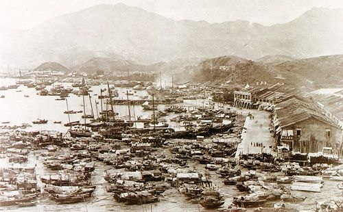
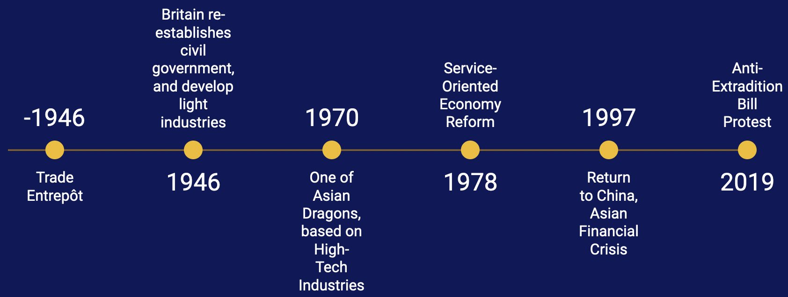
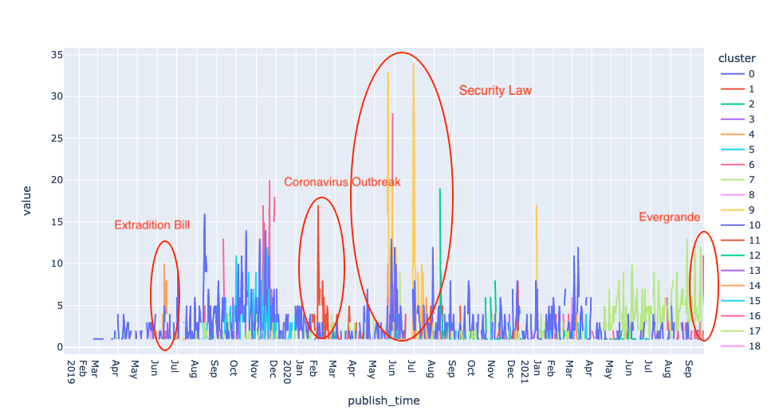
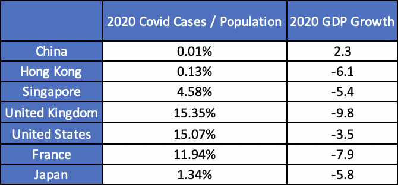
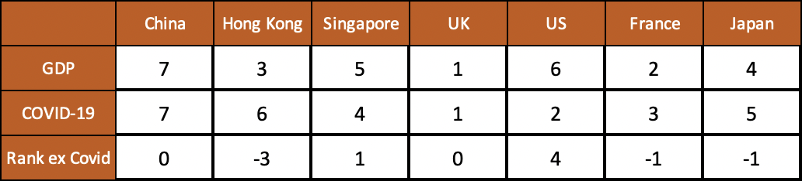
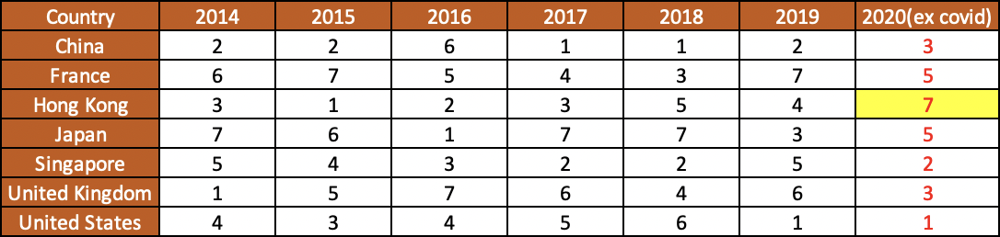

Historical Economy Before the Protest
Having a historical perspective is important. It helps one to understand the cause of major economic events, and their long-run impacts. This section gives a timeline of key economic events in Hong Kong’s history.
For much of its history, Hong Kong’s main economic function was as mainland China’s entrepôt. After World War II, rapid industrialization through industrial transplantation and relocation from mainland China turned Hong Kong into a manufacturing and export center such as textiles. As Britain re-established civil government in 1946, Hong Kong built its market system inherited from the UK, which absorbed Hong Kong as part of the global alliance dominated by UK and US. Since then, Hong Kong started to play an important role in Asia economy as a British outpost.
In 1970s, Hong Kong was established as one of the “Asian Dragons” together with South Korea, Singapore, and Taiwan, which underwent rapid industrialization and maintained exceptionally high growth rates. After China economic reform in 1978, a huge market was opened to the global financial market. With the relocation of manufacturing to China’s Pearl River Delta, Hong Kong’s focus shifted from industrial to service economy, including financial service and professional service. Since financial service is an exceptionally large part of Hong Kong economy, it is separated from other services. Other professional services cover legal, accounting, auditing, scientific research, management consulting, etc. When China was trying to adopt to the global economy, Hong Kong already had extensive expertise and could provide valuable services to both international and mainland businesses. As the bridge between mainland and the world, Hong Kong benefited much from its service-oriented model. After handover to China in 1997, Hong Kong returned to China and its economic tie with mainland continued to be strengthened. The tourism industry flourished along with its rapid growth, and had a sharp increase of domestic tourists from mainland China. Therefore in Hong Kong, four key industries primarily drive domestic economic growth: financial services, tourism, trading and Logistics, and professional and producer services. These are the weathervanes of the Hong Kong economy.
Economic Effect
The Anti-Extradition Bill protest began with a sit-in at the government headquarters on 15 March 2019 and a demonstration attended by hundreds of thousands on 9 June 2019, followed by a gathering outside the Legislative Council Complex to stall the bill's second reading on 12 June. The protest peaked 2 million participants in June 2019, according to the organizer, while the police estimated that there were 340,000 at its peak. Later in May 2020, the introduction of National Security Law drew another wave of strong reaction . But the number of protesters were much smaller than 2019. This section will only focus on the effect of the first and largest wave protest from March to August 2019.
Although modern economists and statisticians have provided a set of tools like GDP, employment rate, to understand the economy in a quantitative manner, people tend to use them from a statistics perspective like quoting the numerical values in an article, or only use one or few charts to corroborate their arguments. One big reasons is paper media is not flexible. With the development of web technologies, people not only can see the charts, but can also interact with it, and form their own opinions from the data. Paper media is only good at giving one point of view, a one-dimensional world. This section aims to provide a multi-dimensional data-dashboard experience to include as many relevant data visualizations as possible to explore the economic effect of Hong Kong 2019-2020 protest.
Population
Hong Kong can be geographically divided into three territories: Hong Kong Island, Kowloon, and New Territories. There are approximately 7 Million population in Hong Kong and half of them live in the New Territories. Population has been stable for the past six years.
Transportaion
Hong Kong has a highly developed and diverse transport network. Based on Hong Kong Government's Travel Characteristics Survey, over 90% of the daily journeys are on public transport, the highest rate in the world. Therefore, the transportation data is a good indication of Hong Kongers' outdoor activities.

From the monthly year-over-year table, total public transport started to decline at a rate of 0.74% in July 2019, and peaked at 19.38% in November. Among ways of transportation, Airport Express Line was affected the most.
Consumer Spending
Retail sales statistics are primarily intended to measure the sales receipts of goods sold by local retail establishments. The retail sales breakdown can help gauge the business performance of each local retail sector.

All retail outlets declined since Feb 2019, and declined the most at Oct 2019. “Fruits and vegetable, fresh” category kept a strong growth rate since 2019, “Jewellery, watches, and valuable gifts” declined the most in 2019.
Employment
Employment is linked to economic growth in many ways. The stability of the economy rests on the ability to maintain a low unemployment rate, while high unemployment often leads to high crime rate. Work also directly contributes to economic growth: high employment means a greater number of goods can be produced, and workers can receive money to spend on buying the goods been produced.

The overall employment slightly declined at the end of 2018, and gradually worsened since May 2019. One thing to note is that even though Manufacture declined the most during 2019 Q2, but the decline started long before the protest. On a month over month basis(horizontally), most industries colors slowly change from “blue” to “orange”. “Accommodation food services” and “Retail” suffered the most since 2019. Comparing to consumer spending and transportation, employment has a less drastic change in response to the protest. The change comes in a more slow and long-term manner.
GDP
The most comprehensive measure of overall economic performance is gross domestic product or GDP. The traditional Four Key Industries in Hong Kong, including financial services, tourism, trading and logistics, and professional and producer services contribute 20%, 20% , 12%, 5% to overall GPD respectively, providing impetus to growth of other sectors and creating employment.
Hong Kong’s GDP per capita suffered a retraction of -0.09% in 2019. While seemingly insignificant, this was the third time Hong Kong’s economy failed to grow in over 50 years. The previous two times were 1998 Asian Financial Crisis, and 2008 Global Financial Crisis.
GDP Breakdown
In 2019, “Financial Service” surpassed “Trading and Logistic”, becoming the largest industry in Hong Kong economy. While the share of “Other Professional Services” did not change, “Tourism” suffered a 20% decline in its GDP share.
Tourism 5% of GDP

The overall Tourism industry started to decline in July 2019. Mainland China, accounting for close to 50% of Hong Kong’s travel, suffered the most, about 42% in July.
Trading and Logistics 20% of GDP
The “Trading and Logistics” industry was the largest among the four pillars in terms of both value added and the number of employment. However, both the imports and exports shrunk tremendously sin the protest. From the category charts, foodstuff exports was impacted the most, while fuel and raw material remained relatively stable.
Seemingly, imports shift to Singapore and Taiwan from other countries, but exports declined in all the countries.
Financial Service 20% of GDP
Asset management, financing and financial market services declined in Q3, but returned back higher at the end of 2019. Despite the volatility throughout the year, banking and insurance stagnated after all.
Other Professional Services

While overall professional and producer services declined overall starting 2019 Q3 (-5.26%), it experienced mixed effects among different categories. “Real Estate” and “Professional, scientific, and technical services” were relatively unhampered, managing to grow from 2018 to 2019. “Tourism, convention, and exhibition services” declined by a steep 27.45%.
On an aggregate level, protest caused the economic retraction in the second half of 2019. Tourism and trading and logistic suffered 22.7% and 4.1% decline respectively. Financial Services and Professional Services showed relatively stronger resilience.
Financial Market
Amid the protests, investor’s confidence in Hong Kong took a big hit. As the retail business was hampered by store closures and sharp decrease in tourists arrivals, investors concerned that a recession would be possible. Protesters’ hostility toward pro-extradition-bill companies also damaged the business image of Hong Kong.
Stock Market
The Hang Seng Index(HSI) is composed of the largest companies of the Hong Kong stock market and is the main indicator of the overall financial market performance. The stock started to decline since the protest started in May, and had another wave of selling off in July as the tension intensified.
IPO Market
As a top ranked international financial center, Hong Kong provides a conduit for China to raise financial capital, more specifically equity financing, as well as knowledge from the global capital market. Inherited from the British colonial era, Hong Kong’s financial system was built on the global capital system dominated by UK and US. Combining with its offshore jurisdiction status under the concept of “One Country, Two Systems”, Hong Kong has established an uniquely advantageous position in equity financing. However, the months-long protests over the new extradition bill had driven away investors and companies.
Amid the turmoil, Reuters reported that Chinese giant Alibaba postponed its up to $15 billion listing. The Wall Street Journal reported Saudi Arabia’s state oil giant Saudi Aramco was said to switch its preference from Hong Kong or London to Tokyo as the international destination to list its shares.
Foreign Direct Investment (FDI)
Hong Kong's role as a major source of foreign direct investment (FDI) and a major destination of outward direct investment (ODI) has been evolving. In 2018, the share of the FDI that has come from Hong Kong to invest in Mainland China over the total FDI Mainland China has attracted is over 50%. And majority of the inflow and outflow have been concentrated in investment, real estate and business services.
Despite the negative trend caused by the social unrest in 2019, Hong Kong still ranked as the seventh most attractive destination in the world for FDI in 2019, and within developing Asia it was the second-largest recipient after China, followed by Singapore, India and Indonesia, according to UNCTAD.(UN Conference on Trade and Development)
In 2019, the net investment inflow declined 41% while net investment outflow declined 55%. Among the inflows, accommodation and manufacturing investment were completely halted.
Online Sentiment
Sentiment analysis refers to the use of natural language processing, text analysis, computational linguistics, and many more to identify and quantify the sentiment of some kind of text or audio. This project uses unsupervised lexicon-based approach based on Vader lexicon for sentiment analysis. Here are the daily sentiment indexes based on news data from News IO, and comment data from Reddit.
News sentiment was negative between June 2019 and Feb 2020. Then it started to pick up fast since May 2020 and peaked at June. Both protests follow the same timelines as the first and second wave of protest, but showed opposite reactions.
Reddit data sentiment is generally positive. Some negative sentiment showed between June 2019 to Sep 2020.
Long Term Economic Effect
As shown from the above analysis, almost all the economic indicators took a hit at 2019 Q2. From the short-term perspective, the economy was certainly affected.
It is still unclear how the protest will affect the economy in the long-term, since COVID-19 kick in soon after the protest, and is still present. It is challenging to attribute any changes in that period to a non-COVID event. On the other hand, figuring out the ongoing effect of the protest is valuable. It can provide insight for policy makers and investors to vision upcoming changes and make timely decisions.
This section introduces a method to estimate the protest effect on economy when COVID-19 is still present. The idea is subtracting COVID-19 effect from GDP growth, and comparing the growth between countries. Since GDP and COVID-19 are two very different measures, simply subtract one from another does not provide any interpretation. This section will use the rank of GDP growth rate between countries and the rank of COVID-19 infection rate by population between countries.
For example, if A,B,C are in a running race, we know A has a severe injury, B has a mild injury, and C has no injury. An intuitive approach to estimate the ranking in full-load, no injury condition is to subtract the severity of their injury from current rank.
Scenario 1
Rank ex injury: A = B = C. Here C won the first place, but because they have better injury condition than A and B, their normal condition performance may just be the same.
Scenario 2
Rank ex injury: B > A > C. Here B won the first place with mild injury. They certainly outpace C in no-injury condition, and may also outpace A.
Applying the same method to GDP growth rate and COVID-19 infection rate. Running race is replaced by GDP growth, and injury is replaced by COVID-19. Below are the rankings between China, US, UK, Hong Kong, France, Japan, and Singapore.
2020 GDP ex COVID Rank Estimation
So the GDP growth ranking of 2020 excluding COVID effect is US > Singapore > China = UK > France = Japan > Hong Kong.
GDP Rank Comparison
Hong Kong’s GDP is ranked the 7th after removing COVID-19 effect. It is the first time it falls to the last place. It means
Even though Hong Kong was not impacted much by COVID-19 compared to other countries, GDP still performed poorly.
Same method can be applied to 2021's GDP data. Whether 2019 is a major turning point for Hong Kong economy, 2021’s data is important to look into.
It is still unclear what the long-term impact of the protest will be. On the bright side, Hong Kong has been and still is an important international trade port, and it likely will be in the future. From the financial service and FDI data, Hong Kong remains an attractive destination for investment and businesses. It has a unique role in Asia financial market. The future is yet to come.